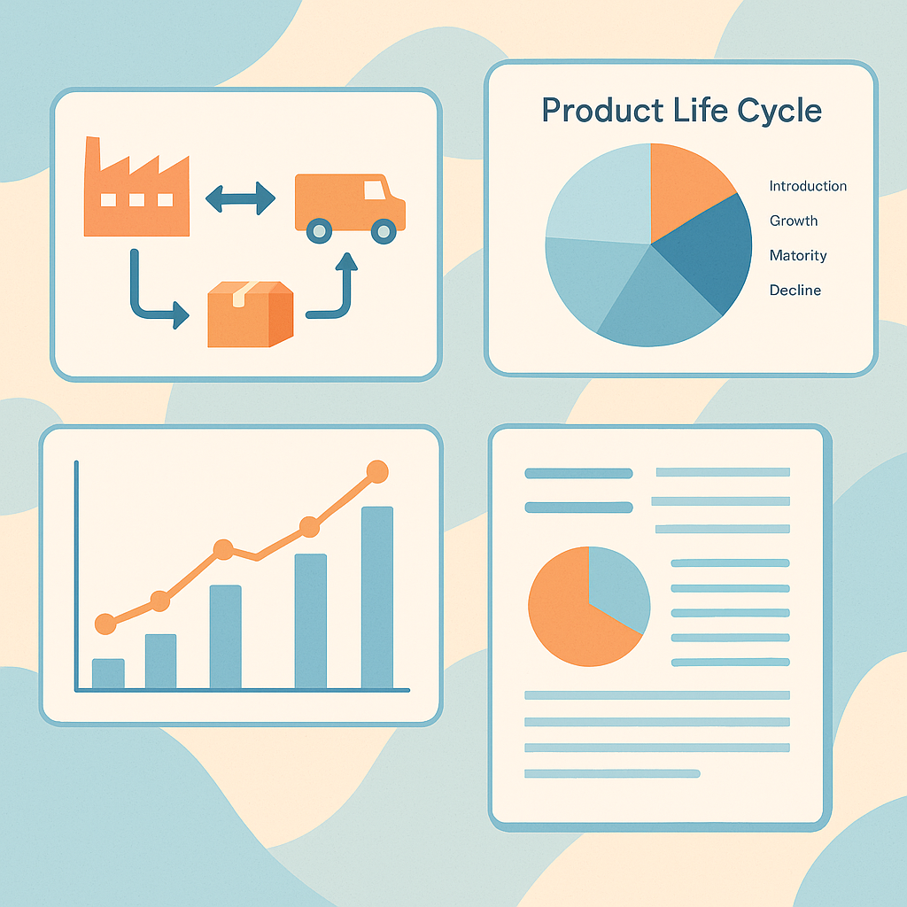

Tool Crib Indirect Materials Inventory Management System (IMIMS)
Systems Engineering
Product Management
IoT Tracking
Microsoft D365
L2L Platform
Balanced Scorecard
VSM
MCS / LOC
Capstone
Overview
Led a two-semester capstone project for Rochester Sensors to design and deliver a comprehensive Indirect Materials Inventory Management System (IMIMS) — addressing procurement inefficiencies, real-time inventory visibility gaps, and vendor management challenges across the organization's warehouse operations. The project spanned the full systems engineering lifecycle, from requirements and architecture through strategic frameworks and projected impact modeling.
What Was Built
Product Vision & Roadmap
Defined the product vision and roadmap by integrating
IoT-based tracking, Microsoft D365, and the
L2L platform to enable real-time inventory visibility and automated procurement
workflows. Aligned cross-functional teams around a unified implementation strategy
with clearly defined milestones and ownership.
System Architecture & Planning
Designed the full system architecture, project charter, risk and quality management
plans, and compliance matrices. Applied a complete
systems engineering lifecycle to ensure the
solution was scalable, secure, and cost-effective from the ground up.
Strategic Frameworks
Developed a Balanced Scorecard (BSC) and
Viable System Model (VSM) to align strategic,
operational, and learning objectives. Engineered
Management Control Systems (MCS) and
Levers of Control (LOC) models to improve accountability and cross-functional
decision-making.
Vendor Management
Streamlined vendor management by consolidating supplier databases and building
performance scorecards to evaluate sourcing
efficiency. Identified consolidation opportunities and proposed a scalable vendor
governance model to reduce dependency risks and improve procurement reliability.
Key Outcomes
- Projected 50% reduction in procurement cycle time through automated workflows and real-time IoT inventory tracking, eliminating manual hand-offs and reducing lead time uncertainty across the supply chain.
- Targeted inventory error rate below 5% by replacing manual tracking with integrated D365 and L2L data pipelines, improving accuracy of stock levels and replenishment triggers.
- Projected 20% reduction in operational costs through vendor consolidation, performance-based sourcing decisions, and elimination of redundant procurement steps identified during process mapping.
- Delivered a complete systems engineering documentation package including architecture diagrams, BSC dashboards, risk registers, and implementation roadmaps — ready for handoff to the client engineering and operations teams.